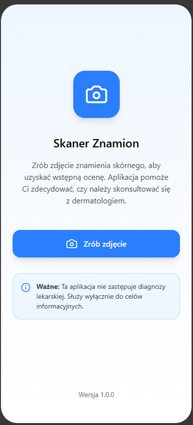
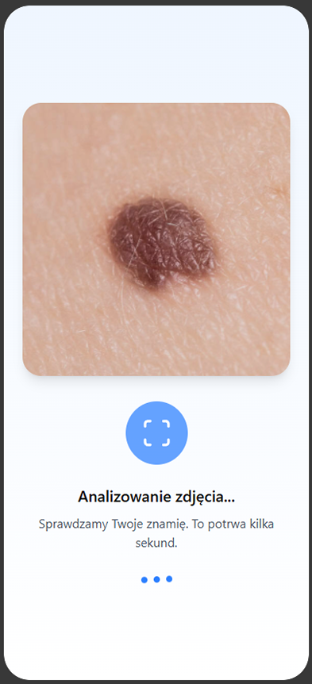
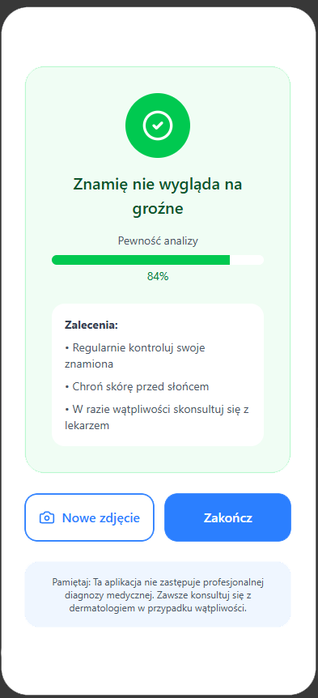
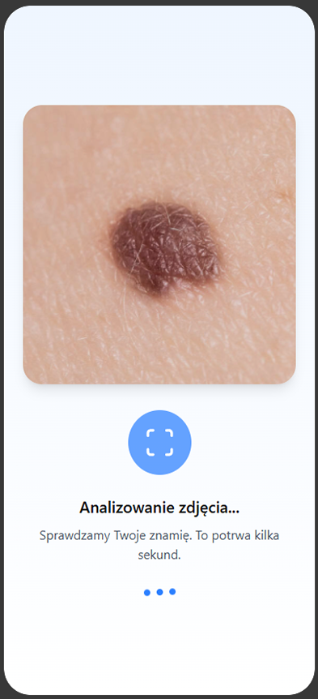
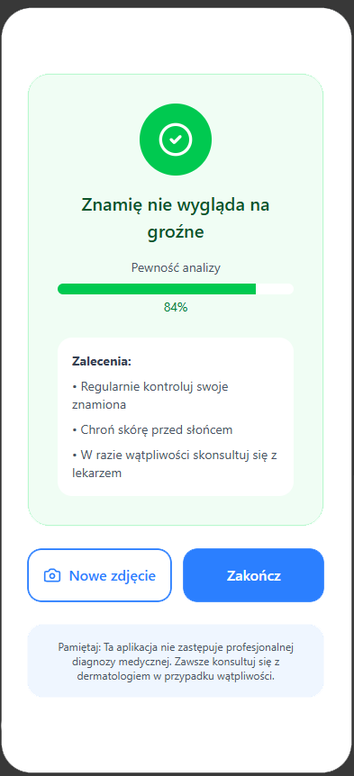
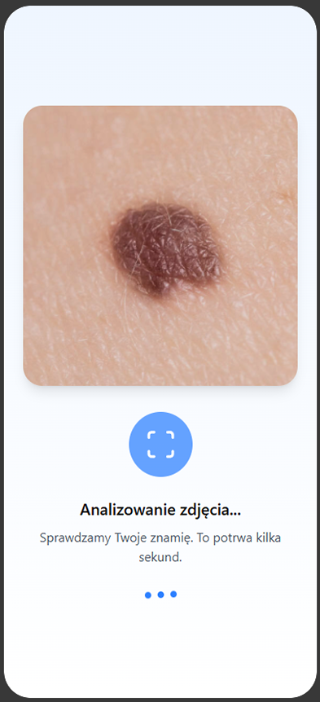
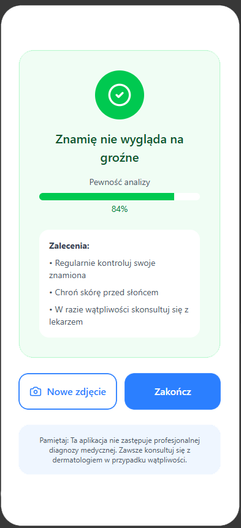
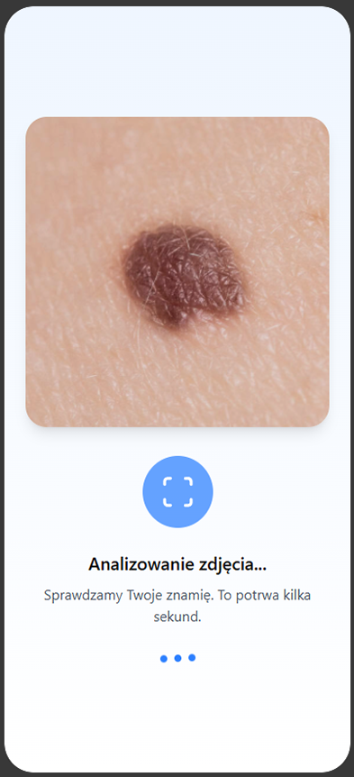
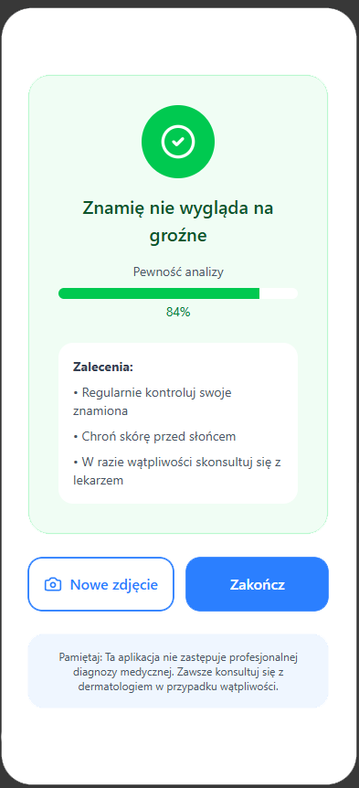

Zobacz aplikację

 





Inteligentna aplikacja mobilna do monitorowania znamion skórnych i wspomagania wczesnego wykrywania czerniaka.
Rozpocznij kontrolę skóryWykonaj zdjęcie znamienia bezpośrednio w aplikacji. Algorytmy analizują jego kształt, kolor i strukturę.
Sztuczna inteligencja ocenia ryzyko zmian skórnych i wskazuje, czy warto skonsultować się z dermatologiem.
Monitoruj zmiany w czasie, porównuj zdjęcia i zachowuj historię kontroli swojej skóry.


MySmartDoctor nie zastępuje lekarza, ale pomaga szybciej zauważyć niepokojące zmiany.
Pobierz aplikację